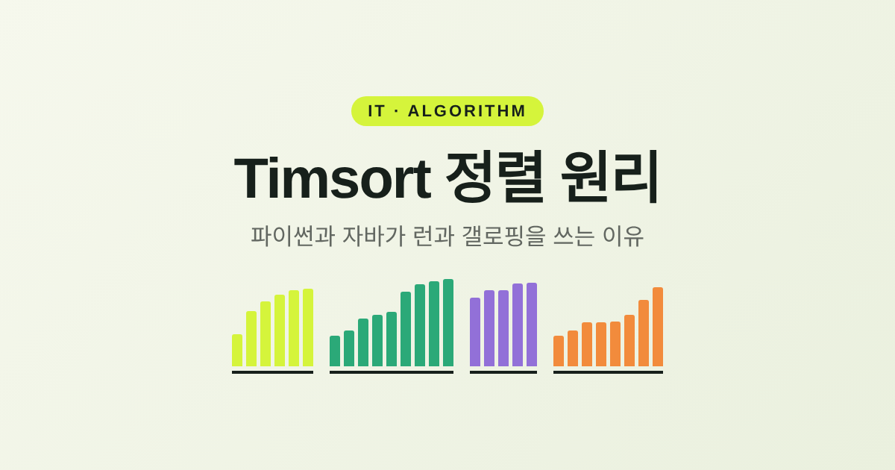
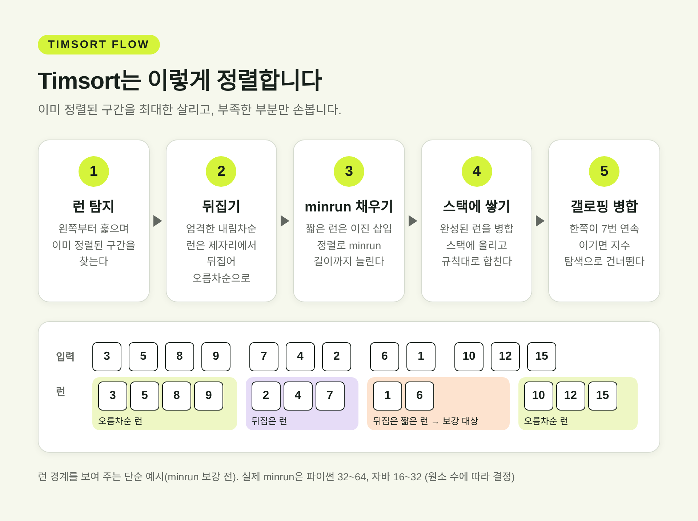
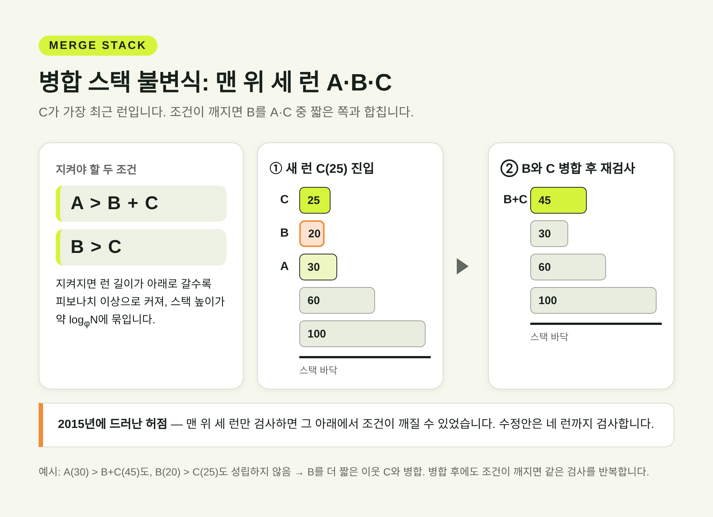
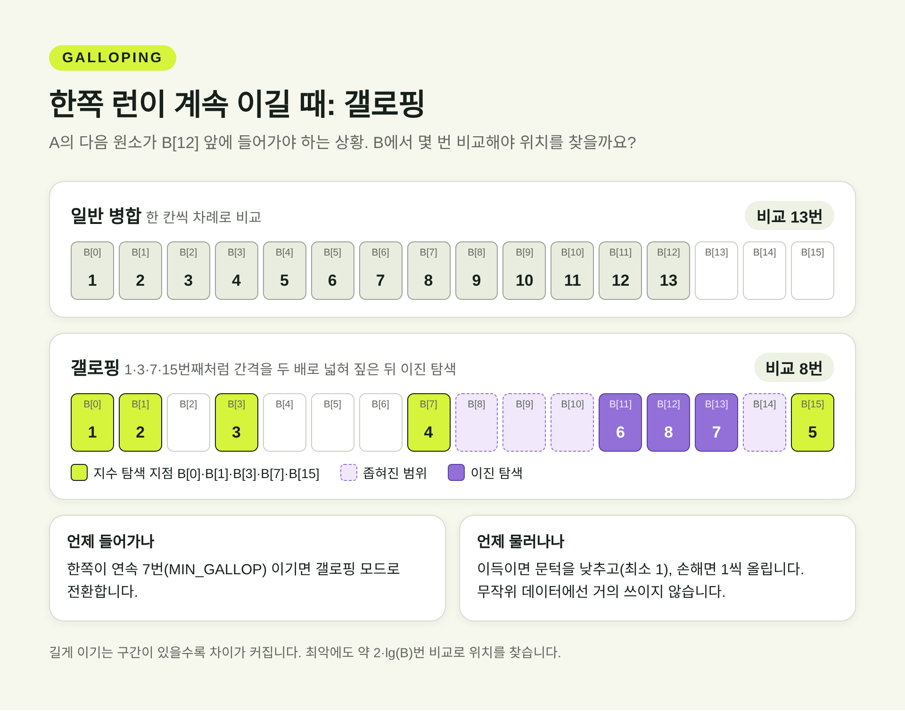
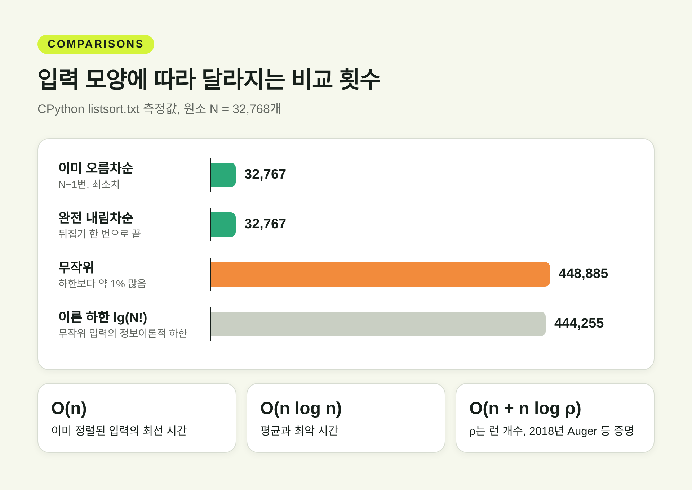
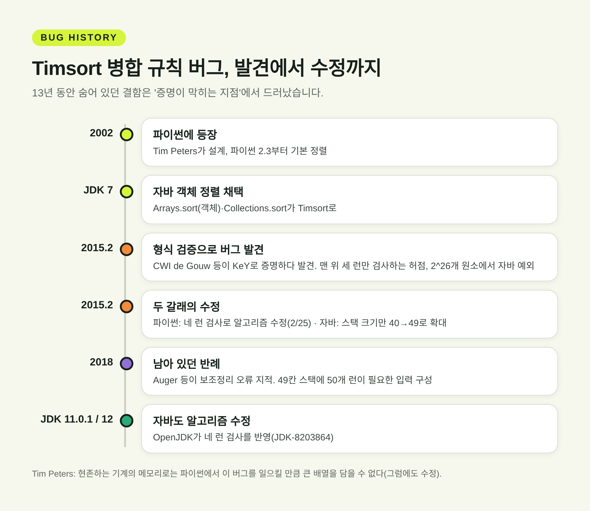
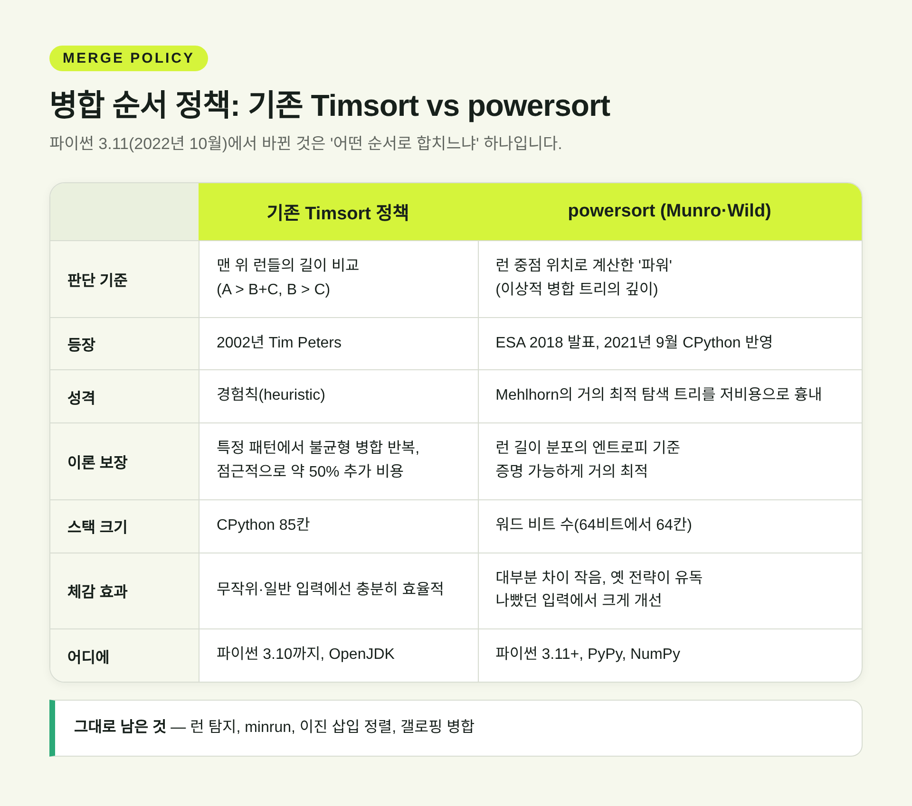

Timsort 정렬 원리, 파이썬과 자바가 런과 갤로핑을 쓰는 이유
이번 글에서는 파이썬의 sorted()와 자바의 객체 배열 정렬 안쪽에서 돌아가는 Timsort 정렬 알고리즘을 정리해 보겠습니다. 런 탐지부터 minrun, 이진 삽입 정렬, 병합 스택 불변식, 갤로핑 모드까지 차례로 살펴봅니다. 2015년 형식 검증으로 드러난 버그와 파이썬 3.11의 powersort 변경도 함께 다룹니다.

먼저 핵심만 세 줄로 요약합니다.
- Timsort는 데이터 속에 이미 정렬된 구간(런)을 찾아 이어 붙이는 적응형·안정 병합 정렬입니다.
- 이미 정렬된 입력은 N−1번 비교로 끝나고, 무작위 입력에서도 이론적 하한보다 약 1% 많은 비교에 그칩니다.
- 병합 순서 규칙은 한 번 버그가 났고, 파이썬은 3.11부터 그 규칙만 powersort로 바꿨습니다.
■ 실제 데이터는 무작위가 아니다
Timsort는 2002년 Tim Peters가 파이썬을 위해 만들었습니다. 그해 7월 20일, 그는 python-dev 메일링 리스트에 새 정렬을 소개하며 이렇게 적었습니다.
"정렬 알고리즘은 보통 무작위 데이터로 시험하지만, 실제로는 무작위 데이터를 거의 보지 못한다."
이 한 문장이 Timsort의 출발점입니다. 로그는 시간순으로 쌓이고, 정렬된 목록 끝에 몇 줄이 덧붙고, 거의 정렬된 표에서 몇 칸만 바뀝니다. 현실의 데이터에는 이미 질서가 꽤 들어 있습니다.
당시 Peters가 공개한 2^20개 원소 실험이 그 차이를 잘 보여 줍니다. 무작위 데이터에서는 기존 samplesort 5.58초, 새 정렬 5.61초로 거의 같았습니다. 그런데 오름차순 데이터에서 세 쌍만 무작위로 바꾼 입력에서는 5.12초 대 1.00초였습니다. 옛 퀵정렬의 최악 입력에서는 5.46초 대 0.74초였습니다.
무작위 데이터에서 손해 보지 않으면서, 질서가 있는 데이터에서는 크게 이득을 보는 것. 이것이 설계 목표였습니다. 이후 Timsort는 파이썬 2.3부터 기본 정렬이 되었고, 자바·안드로이드·V8·Swift 등으로 퍼졌습니다.
■ 1단계 — 런(run)을 찾는다
Timsort는 배열을 왼쪽부터 훑으며 이미 정렬된 연속 구간을 찾습니다. 이 구간을 런(run)이라고 부릅니다.
- 오름차순 런은
a0 <= a1 <= a2 ...처럼 같거나 커지는 구간입니다. - 내림차순 런은 원래
a0 > a1 > a2 ...처럼 엄격하게 작아지는 구간만 인정했습니다. - 내림차순 런은 그 자리에서 뒤집어 오름차순 런으로 바꿉니다.
내림차순에 '엄격하게'라는 조건이 붙은 이유가 있습니다. 같은 값이 섞인 구간을 통째로 뒤집으면 같은 값끼리의 순서도 뒤바뀌기 때문입니다. 그러면 뒤에서 설명할 안정성이 깨집니다.
참고로 2024년 CPython에서는 이 조건을 완화하는 변경(GH-116554)이 논의되었습니다. 같은 값 묶음을 먼저 뒤집고 전체를 다시 뒤집어 원래 순서를 되살리는 방식입니다. 제안자는 무작위 데이터에서 런이 평균 약 20% 길어진다고 보고했습니다. 다만 어느 파이썬 버전부터 적용됐는지는 이번에 확인하지 못했습니다.
■ 2단계 — minrun과 이진 삽입 정렬
런을 찾았는데 너무 짧다면 어떻게 할까요. 무작위 데이터라면 런은 대개 두세 칸에서 끊깁니다. 이런 조각을 그대로 병합하면 병합 횟수만 늘어납니다.
그래서 Timsort는 minrun이라는 최소 길이를 정합니다. 자연 런이 minrun보다 짧으면, 뒤따르는 원소를 끌어와 minrun 길이까지 채운 뒤 정렬합니다. 이때 쓰는 것이 이진 삽입 정렬입니다.
삽입 정렬은 작은 구간에서 오버헤드가 거의 없어 빠릅니다. 여기에 삽입 위치를 이진 탐색으로 찾아 비교 횟수를 줄인 것이 이진 삽입 정렬입니다. 원소를 옮기는 비용은 그대로지만, 비교가 비싼 객체 정렬에서는 이 차이가 큽니다.
minrun을 고르는 규칙도 흥미롭습니다. CPython의 설계 문서(listsort.txt)에 따르면 고전 방식은 이렇습니다.
- 원소가 64개 미만이면 minrun = N. 전체를 이진 삽입 정렬로 끝냅니다.
- 그 외에는 N의 상위 6비트를 취하고, 나머지 비트에 1이 하나라도 있으면 1을 더합니다.
- 결과는 32~64 사이가 되고, N/minrun은 2의 거듭제곱이거나 그보다 살짝 작아집니다.
def minrun(n):
r = 0
while n >= 64:
r |= n & 1 # 밀려나는 비트 중 1이 있었는지 기억
n >>= 1
return n + r
minrun(2112) # 33
문서에 나오는 예가 N=2112입니다. minrun을 32로 잡으면 런이 66개가 되어, 마지막에 2048과 64 길이를 합치는 불균형한 병합이 생깁니다. 33으로 잡으면 런이 정확히 64개가 되어 모든 병합이 균형을 이룹니다.
자바의 구현은 조금 다릅니다.
OpenJDK의 TimSort.java는 MIN_MERGE를 32로 두어 minrun이 16~32 사이에서 정해집니다.
32개 미만의 배열은 병합 없이 이진 삽입 정렬만으로 처리합니다.

■ 3단계 — 병합 스택과 불변식
이렇게 만든 런은 하나씩 스택에 쌓입니다. Timsort는 런이 들어올 때마다 스택 위쪽을 보고 병합할지 결정합니다.
원래 규칙은 맨 위 세 런의 길이를 A, B, C(C가 가장 최근)라 할 때 다음 두 조건을 지키는 것입니다.
- A > B + C
- B > C
조건이 깨지면 B를 A와 C 중 더 짧은 쪽과 합칩니다. 이 규칙 덕분에 스택에 남은 런의 길이는 아래로 갈수록 적어도 피보나치 수열만큼 빠르게 커집니다. 그래서 스택 높이는 대략 log_φ(N) 안에 묶입니다. 비슷한 길이끼리 합치게 되니 병합도 균형을 이룹니다.
병합에 쓰는 메모리도 아낍니다. 두 런 A, B를 합칠 때 임시 공간은 둘 중 짧은 쪽 길이 min(A, B)만큼만 씁니다. 병합 전에 이진 탐색으로 양 끝의 '이미 제자리에 있는 부분'을 잘라 내 이 공간을 더 줄입니다.

■ 4단계 — 갤로핑, 한쪽이 계속 이길 때
두 런을 병합할 때는 보통 앞에서부터 하나씩 비교해 작은 쪽을 내보냅니다. 그런데 한쪽 런이 연달아 이기는 경우가 있습니다. 예컨대 [1~1000]과 [1001~2000]을 합친다면 왼쪽이 1000번 내리 이깁니다.
Timsort는 한쪽이 연속 7번(MIN_GALLOP = 7) 이기면 갤로핑 모드로 들어갑니다. 상대 런의 1, 3, 7, 15번째 칸처럼 간격을 두 배씩 넓혀 가며 위치를 짚고, 범위가 잡히면 이진 탐색으로 마무리합니다. 한 칸씩 비교하는 대신 덩어리째 옮기는 셈입니다. 이 아이디어는 McIlroy가 1993년 논문에서 '지수 탐색'이라 부른 기법과 맞닿아 있습니다.
물론 공짜는 아닙니다. 무작위 데이터에서 갤로핑은 경우에 따라 비교가 최대 약 33% 더 들 수 있습니다. 그래서 문턱값 min_gallop은 상황에 따라 움직입니다. 갤로핑이 이득을 보면 문턱을 낮추고(최소 1까지), 손해를 보면 1씩 올립니다. 무작위 데이터에서는 문턱이 금세 높아져 갤로핑에 거의 들어가지 않습니다.

■ 숫자로 보는 적응성
이 장치들이 모이면 어떤 결과가 나올까요. listsort.txt에 실린 측정값(N = 32,768)을 보면 분명합니다.
| 입력 | 비교 횟수 | 의미 |
|---|---|---|
| 이미 오름차순 | 32,767 | N−1번, 최소치 |
| 완전 내림차순 | 32,767 | 한 번 뒤집고 끝 |
| 무작위 | 448,885 | 이론 하한 lg(N!) 444,255보다 약 1% 많음 |
정렬된 입력은 런 하나를 확인하는 것으로 끝납니다. 무작위 입력에서는 이론 하한에 바짝 붙습니다. 시간 복잡도로 말하면 최선 O(n), 평균과 최악 O(n log n)입니다. 2018년 Auger 등은 파이썬판이 O(n + n log ρ)(ρ는 런 개수)로 동작함을 증명했습니다. 런이 적을수록 빨라진다는 직관이 수식으로 확인된 셈입니다.
V8 엔진 팀의 경험도 같은 방향입니다.
V8은 2018년 v7.0(크롬 70)에서 Array.prototype.sort를 퀵정렬에서 Timsort로 바꿨습니다.
역순 덩어리 두 개로 된 입력에서는 최대 17배 빨라졌고, 퀵정렬이 앞선 것은 무작위 데이터뿐이었습니다.

■ 안정 정렬이 왜 중요한가
Timsort는 안정(stable) 정렬입니다. 값이 같은 원소들은 정렬 뒤에도 원래 순서를 지킵니다. 인접한 런끼리만 병합하고, 내림차순 런을 엄격하게 정의한 것도 이 성질을 지키기 위해서입니다.
파이썬 공식 문서는 이를 "보장한다"고 명시합니다.
from operator import itemgetter
data = [('red', 1), ('blue', 1), ('red', 2), ('blue', 2)]
sorted(data, key=itemgetter(0))
# [('blue', 1), ('blue', 2), ('red', 1), ('red', 2)]
('blue', 1)은 언제나 ('blue', 2)보다 앞에 옵니다.
이 성질 덕분에 여러 기준 정렬을 단계로 나눠 할 수 있습니다.
보조 기준(나이)으로 먼저 정렬하고, 주 기준(성적)으로 다시 정렬하면 됩니다.
두 번째 정렬은 첫 정렬이 만든 질서를 그대로 활용하니 비용도 크지 않습니다.
자바에서는 이 선택이 조용한 파장을 낳기도 했습니다.
JDK 7에서 Arrays.sort(객체 배열)와 Collections.sort가 Timsort로 바뀌자, 비교 규칙이 일관되지 않은 Comparator를 쓰던 코드가 IllegalArgumentException을 만나기 시작했습니다.
"Comparison method violates its general contract!"라는 그 메시지입니다.
옛 동작이 필요하면 java.util.Arrays.useLegacyMergeSort를 true로 두는 길이 남아 있습니다.
반면 int 같은 기본형 배열은 안정성이 의미가 없어 Dual-Pivot Quicksort를 씁니다.
■ 2015년, 형식 검증이 찾아낸 버그
Timsort의 병합 규칙에는 오래 숨어 있던 결함이 있었습니다. 2015년 2월, 네덜란드 CWI의 Stijn de Gouw 연구진이 이를 공개했습니다.
이들은 검증 도구 KeY로 OpenJDK의 Timsort가 올바르다는 것을 증명하려 했습니다. 그런데 증명이 막혔고, 원인을 따라가 보니 알고리즘 쪽이 틀려 있었습니다.
문제는 "맨 위 세 런만 검사한다"는 데 있었습니다. 위쪽 세 개가 조건을 만족해도, 그 아래쪽에서 불변식이 깨질 수 있었습니다. 그러면 런 길이가 예상만큼 빨리 커지지 않고, 스택이 미리 잡아 둔 크기를 넘어섭니다.
자바는 메모리를 아끼려고 스택 크기를 배열 길이별로 작게 잡아 두었습니다(최대 40).
연구진이 만든 최소 반례는 67,108,864개(2^26) 원소 배열이었습니다.
스택이 41칸 필요한데 40칸뿐이어서 ArrayIndexOutOfBoundsException이 났습니다.
같은 논리 결함은 파이썬 구현에도 있었습니다.
연구진의 수정안은 간단했습니다. 맨 위 네 런까지 검사해 불변식을 실제로 회복시키는 것입니다. 그리고 이 수정본이 옳다는 것을 KeY로 증명했습니다. CWI는 200만 개가 넘는 추론 규칙과 수천 번의 수동 단계가 들었다고 밝혔고, 2019년 확장 논문에는 약 297만 번의 규칙 적용 중 1% 정도가 사람 손을 거쳤다고 적혀 있습니다.
대응은 두 언어가 달랐습니다.
- 파이썬은 2015년 2월 25일 알고리즘 자체를 고쳤습니다. Tim Peters는 "현존하는 어떤 기계도 이 버그를 일으킬 만큼 큰 배열을 담을 메모리가 없다"면서도 고쳐야 한다고 했습니다.
- 자바는 알고리즘 대신 스택 크기를 늘렸습니다(40에서 49로). 연구진은 이를 증상만 치료한 차선책으로 봤습니다.
이야기는 거기서 끝나지 않았습니다. 2018년 Auger 등은 2015년 논문의 보조정리 증명에 오류가 있음을 짚었습니다. 49칸 스택으로도 50개 런이 필요한 입력을 만들 수 있었던 것입니다. OpenJDK는 결국 JDK 11.0.1과 12에서 네 런 검사를 넣는 방향으로 고쳤습니다.

■ 파이썬 3.11, 병합 순서를 powersort로
2015년의 수정은 버그를 막았지만, 병합 규칙 자체의 한계는 남았습니다. Timsort의 규칙은 런 길이만 보고 정하는 경험칙이어서, 특정 패턴에서는 불균형한 병합이 반복됩니다. 최악의 경우 점근적으로 약 50%의 추가 비용이 생긴다는 분석이 있습니다.
여기에 답을 낸 것이 Ian Munro와 Sebastian Wild의 powersort입니다. 2018년 유럽 알고리즘 심포지엄(ESA)에서 발표됐고, Tim Peters가 2021년 9월 CPython에 반영해 2022년 10월 출시된 파이썬 3.11에 들어갔습니다.
원리는 이렇습니다.
- 배열 전체를 0~1 구간으로 보고, 각 런을 그 중점 위치에 놓습니다.
- 인접한 두 런의 중점이 폭 2^-p짜리 칸에서 처음으로 서로 다른 칸에 들어가는 p를 '파워'로 삼습니다.
- 파워는 이상적인 이진 병합 트리에서 두 런이 만나는 깊이에 해당합니다.
- 스택 위 경계의 파워가 새 경계의 파워보다 크면 병합합니다.
결과적으로 런 길이 분포의 엔트로피 기준으로 "증명 가능하게 거의 최적"인 병합 순서가 나옵니다.
여기서 하나 짚어 둘 점이 있습니다.
위키백과 등에는 "3.11에서 Timsort가 powersort로 대체됐다"고 적혀 있기도 합니다.
하지만 CPython 커밋을 보면 바뀐 것은 병합 순서를 정하는 함수(merge_collapse)입니다.
런 탐지, minrun, 이진 삽입 정렬, 갤로핑 병합은 그대로 남았습니다.
'엔진은 그대로 두고 조립 순서만 바꾼 것'에 가깝습니다.
체감 효과는 크지 않습니다.
CPython 변경 기록은 대부분의 list.sort() 사용에서 큰 시간 차이가 없을 것이라고 했습니다.
옛 전략이 유독 나빴던 경우에만 뚜렷한 개선이 있고, 인위적으로 만든 입력에서는 옛 전략이 나은 경우도 있다고 솔직히 적었습니다.
리버풀대학교 역시 개선 폭은 작지만, 파이썬 설치 수가 워낙 많아 전체로는 에너지 절약이 될 수 있다고 설명했습니다.
powersort는 이후 PyPy와 NumPy에도 들어갔습니다.

정리하면 이렇습니다.
Timsort는 새로운 비교 기법을 발명한 알고리즘이 아닙니다. 삽입 정렬, 병합 정렬, 지수 탐색처럼 오래된 재료를 현실 데이터의 모양에 맞춰 엮었습니다. 예전에는 정렬을 무작위 데이터의 평균 성능으로 평가했습니다. 지금은 입력이 이미 가진 질서를 얼마나 살리느냐도 함께 봅니다.
한계도 분명했습니다. 병합 규칙은 십여 년간 숨은 결함을 안고 있었고, 최적과는 거리가 있었습니다. 그 빈틈을 형식 검증과 알고리즘 이론이 차례로 메웠습니다.
결국 남는 것은 하나입니다 — 좋은 알고리즘은 데이터를 바꾸려 하기보다 데이터가 이미 가진 것을 먼저 읽습니다.
sorted() 한 줄 뒤에 이만한 이야기가 숨어 있다는 것을 아신다면, 다음 정렬 호출이 조금은 다르게 보이실 것이라 생각합니다.
참고자료
- CPython Objects/listsort.txt (현행)
- CPython Objects/listsort.txt (고전판)
- Tim Peters, [Python-Dev] Sorting (2002-07-20)
- Python 공식 문서, Sorting Techniques
- OpenJDK TimSort.java
- Java SE 21 java.util.Arrays 문서
- JDK-8058109 (JDK 7 Timsort 교체와 useLegacyMergeSort)
- CWI, Java bug fixed with formal methods (2015)
- ERCIM News, Fixing the Sorting Algorithm for Android, Java and Python
- de Gouw 외, Verifying OpenJDK's Sort Method for Generic Collections (2019)
- JDK-8072909
- Python bug 23515, Tim Peters 코멘트
- python-checkins, merge_collapse 수정 (2015-02-25)
- Auger 외, On the Worst-Case Complexity of TimSort (2018)
- JDK-8203864, Execution error in Java's Timsort
- python-checkins, bpo-34561 powersort 전환 (2021-09)
- Munro & Wild, Nearly-Optimal Mergesorts (2018)
- University of Liverpool, Liverpool computer scientists improve Python sorting function (2022)
- Wikipedia, Powersort
- Wikipedia, Timsort
- V8 블로그, Getting things sorted in V8 (2018)
- CPython GH-116554